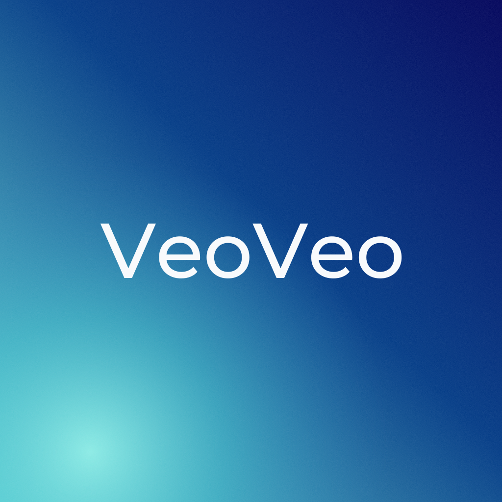
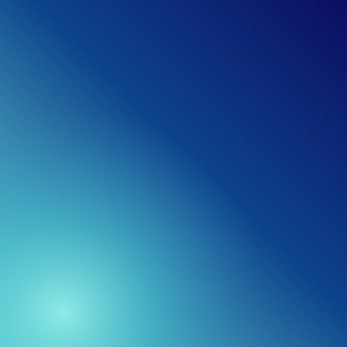

Observado = sacado del icono actual o del manual. Propuesta = nuevo, pendiente de que lo apruebe Álvaro.
Lleva la marca de agua «Contenido generado por IA» abajo a la izquierda.
Mismo degradado del manual (#69DFD9 → #013A85 → #00025A), grano suave y «VeoVeo» en Montserrat Medium. Sin marca de agua.

Fondo y primer plano separados; el logotipo cabe en la zona segura aunque el móvil recorte en círculo.


Pendiente del manual: «VeoVeo» en SVG con la letra del icono. Trazos, sin depender de la fuente.
Android pinta este icono en blanco y pequeño. La marca no tiene símbolo: propongo la «V» del logotipo.
Claqueta y palomitas. Trazo de 2 px redondeado; en texto suave y en celeste si están activos.